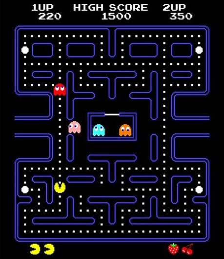
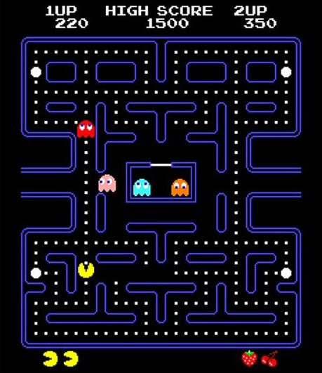
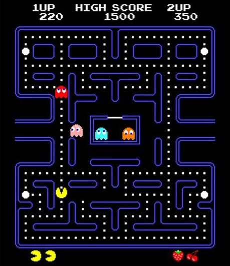

Pac-Man e' il personaggio principale dell'omonimo videogioco arcade. Si presenta come una piccola sfera gialla con una bocca larga. Il suo obiettivo e' mangiare tutti i pallini presenti nel labirinto evitando di essere catturato dai fantasmi. Il movimento di Pac-Man e' controllato dal giocatore e avviene attraverso il joystick o i tasti direzionali. Come descritto nella pagina principale, l' obiettivo di Pac-Man e' mangiare tutti i puntini nel labirinto. Questo consente di passare al livello successivo e guadagnare punti. Inoltre, Pac-man deve evitare i fantasmi che cercano di catturarlo. Il giocatore puo' a sua volta catturare loro solo dopo aver mangiato un "pallino energizzato", il che li porta a tornare nella casa al centro del labirito. I fantasmi seguono modelli di movimento specifici, quindi pianificare il percorso per raccogliere puntini e energizzanti e' fondamentale per ottenere un punteggio elevato e superare i livelli.
